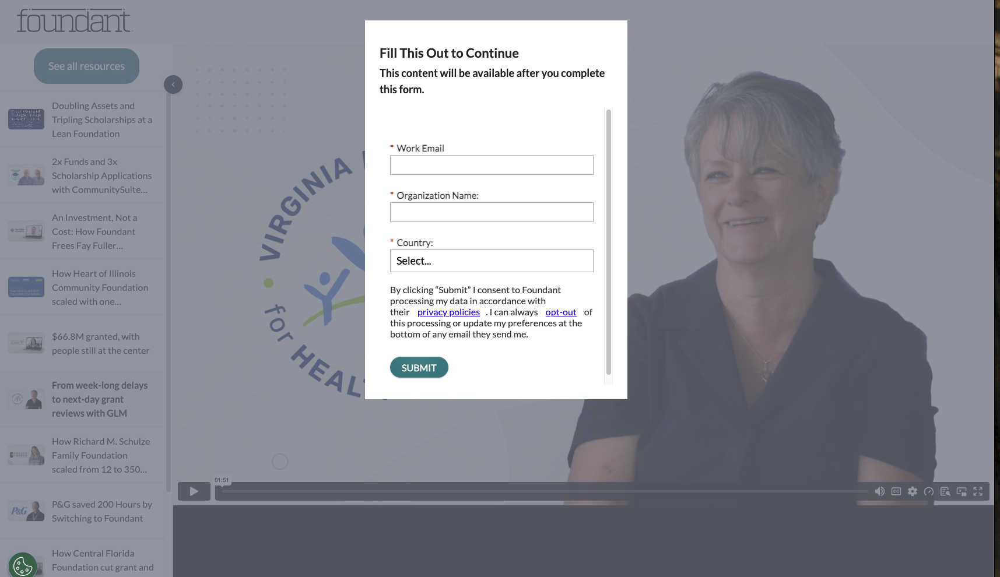
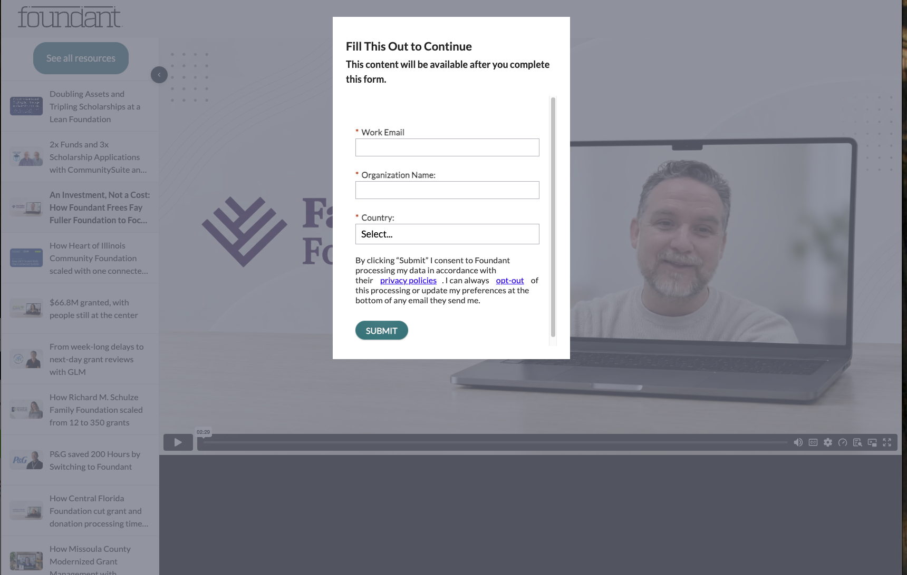
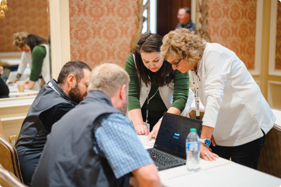

Purpose
Amplify good.
How working together helps people.
A stronger connection. A clearer story.
Where we stand.
Where I’d start.
A six-month approach to amplify good.
Explore the perspective ↗The six dimensions
Every dimension has value.
The connection is what makes it Foundant.
Hover to discover each dimension. Select one to pause the motion and explore what it brings to the experience.
Public evidence → Design opportunity
Turn capability into visible client value.
Select a dimension to reveal the opportunity.
Brand foundations / 01
01 / The strength
Human connection is more than a brand sentiment. Purpose, conviction, and brand idea reinforce one another.
Purpose
How working together helps people.
Conviction
How good grows.
Brand idea
Technology, sector expertise and support in one relationship.
The human connection
01 / Differentiation
Select a dimension to explore how it strengthens another.
Support & service
Sector knowledge
Community
A promising combination
worth validating.
The human connection
Brand foundations / 02
02 / Productive tensions
Entry / Architecture
Different product names, websites, brands and audiences can make it harder to see how each solution connects to Foundant.
What helps each client understand which solution best fits their needs?
Overlapping audiences
GLM, GivingData, and SmartSimple all serve family foundations. GivingData and SmartSimple address grantmaking.
Content clarity
Foundant’s commitment to partnership is genuine. As the family grows, there is room to express it more consistently.
One definition. One date. Used everywhere.
02 / The visitor’s journey
THE VISITOR’S TASK
“I need a solution for my family foundation.”
Guidance starts with Foundant.
The comparison stays with the visitor.
02 / Social channels
Make the experience of working with Foundant more tangible.
Social channels that encourage participation and learning.
Show the relationships that make the difference.
Help prospective clients recognize their needs and explore the right solution.
02 / Video stories across products & people
The human story
Less time on process. More time with the community.
Quote card · Short videoA clear before and after
From mailed paper applications to next-day board access.
Social postGrowth with a small team
From 60 to about 115 funds, with scholarship applications tripling.
Sales one-pagerThree stories. Human connection, practical change, and growth.
These client stories are powerful, but getting to them can be a challenge.
And just when you’re ready to watch, a form asks for your details.


Stories this valuable deserve to be easier to find and watch.
Guide the conversation with thoughtful questions.
Give people space to share their experience in their own words.
02 / Photography & imagery
Foundant: a posed group cutout, a Getty Images file. GivingData and SmartSimple share a similar generic idea.
It suggests energy and connection, but can feel decorative or dated without a clear purpose. Real people are the strongest proof of connection.
The words speak of partnership and care. Visually, the experience can feel more technical than human, so the warmth doesn’t always come through.

The human connection
The imagery should explain the relationship.
FOUNDANT ENGINEERS WITH CLIENTS, SUMMIT 2024.
02 / Questions before change
Why do clients choose and stay?
Which names carry recognition?
Which claims can we support?
What must we preserve or deliver?
Which journeys matter next?
Where does confusion happen?
What is already decided?
What proof can we publish?
How do organizations describe their needs?
Brand foundations / 03
03 / Prioritization / First six months
The website is the proving ground.
The system is the reusable investment.
The website brings company, products, audiences, imagery, and messaging into one concrete experience.
It produces a focused first release and reusable brand rules tested in real pages.
This is the immediate priority, where every brand dimension has to work together.
03 / The six-month approach
Months 01–02 / Align & pilot
Audit touchpoints, listen to stakeholders, and agree on a minimum set of rules while supporting the site work.
Months 03–04 / Build & test
Work with communications, product marketing, and design to create reusable patterns from the pilot.
Months 05–06 / Enable & refine
Train the people using the assets, document ownership, and expand only what has been validated.
03 / Defining success together
Set a baseline first. Agree on targets together. Avoid inventing performance promises.
Client clarity
Test whether priority audiences understand Foundant, the product relationship, and the next step.
Team adoption
Observe whether patterns reduce friction in recurring work without removing creative flexibility.
Brand consistency
Compare key touchpoints using a simple, shared audit rubric.
Brand foundations / 04
04 / Reflection / The next three years
Least clear / Further assessment
A growing area with recent AI initiatives. Fia makes the offer concrete. We need clearer evidence of consistent client results.
Greatest three-year potential
An established community with Compass, events, training, and Coffee Talks. Help clients learn from each other, create together, and share what changed.
Sector knowledge, technology, and community could together help clients turn information into better decisions.
The human connection
For discussion
Preserve the purpose. Activate the foundation. Give the team a system they can use.
A brand system should make
creativity easier,
not more restrictive.
Which part of the foundation feels most essential to Foundant’s future?
Which decision would help the team move forward most quickly?
Let’s discuss
Amplify the good. Make the connection clear.
Vice President of People and Brand
Director of Brand Communications
Director of Design
Senior Director Product Marketing
Vice President Marketing
An outside-in view
This is an outside-in perspective, based on publicly available information. These observations suggest questions and opportunities; they are initial hypotheses to explore with your team, informed by client experience, internal evidence, and work already underway.
Protect the focus
The six-month approach is a starting point for planning together. Dates depend on development capacity, competing priorities, and approval. Agree on one audience journey and a manageable pilot, then learn together, revise the plan openly, and scale only what is validated.
Thank you
Amplify the good. Make the connection clear.